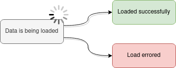

Coding pattern: preventing the use of '0 results' as a loading indicator
The use of 0-results-as-a-loading-indicator is really prevalent. It is horrible UX, as it is directly lying to the user.
Why is this a problem?
“0 results” and “data is being loaded” are two different things, so we shouldn’t collapse them as the same message to the user.
Just today I opened Google Drive on Android and the data loading took so many seconds I had time to scratch my head with “why is my Drive empty?”, until I realized that maybe data is loading (non-software people might not understand this and be even more confused than I was). And sure enough a few seconds more and I saw my files.
The problem is worsened when the server is busy and it takes a long time for the server to respond and thus the lie is visible for a long time.
This problem is everywhere
Google Drive:
I could go on an on where I find this.
Microsoft has had decades to improve Windows, but still when you go to count directory’s files and subdirs (from right click -> properties) it reports “0 files” for a while if the drive is slow to list the files. Seriously, I’m supposed to know the counting is finished when the numbers don’t change for a while.
If I’m doing “data spring cleaning” and I see a directory that I think is empty, I could mistakenly delete the directory as I know I don’t need empty directories. In this case this leads to accidental data loss, but this is expected when you use Microsoft products.
Why is this problem so widespread?
Developers are lazy, and it seems really attractive to use the exact same code path for displaying the “loading” page as for displaying the actual results when the server responds:
Data is loading: renderResultsUI([])
Data is loaded: renderResultsUI(results)
The first case semantically displays to the user a valid search result with 0 items. I.e. a lie, because we don’t know yet how many search results there will be.
Sidenote: combined with missing error handling
Another pet peeve of mine is missing error handling, and you get extra stupid points when you combine it with ‘0 results as a loading indicator’. I witnessed Docker Hub show me “There are no results” for popular search terms that should definitely exist.
When I looked at the developer console, it turned out I was getting HTTP 401 Unauthorized
(or something to that effect which was fixed by logout-and-login), and I guess they either were
ignoring errors entirely OR assuming all errors are 404 (I think I remember seeing 404 text in UI)
and that 404 means 0 search results (which would still be semantically incorrect).
A solution
A solution would be at the UI’s data access API to force the developer to handle these data loading states separately:

In my TypeScript projects I use a Result<T> wrapper where I need to get the data I want by calling
unwrap() which makes the compiler force me to deal with loadingOrError. It contains either:
- the
loadingUI element (a loading indicator - a “spinner”) OR - an
errormessage with correct visuals (red color etc.) applied OR - nothing (no error or not loading, in this case data is set)
Its use looks like this:
private renderReplicationStatusesView() {
const [replicationStatuses, loadingOrError] = this.state.replicationStatuses.unwrap();
if (!replicationStatuses || loadingOrError) {
return loadingOrError;
}
return <ReplicationStatusesView replicationStatuses={replicationStatuses} />;
}
And the UI looks like this when the server is slow to respond:
And when the same request fails:
The code
For the curious, the code for Result<T> wrapper is
here.
A few caveats:
- It contains extra code and support for a case where the first state of lifecycle is
“data loading has not been started”, e.g. if the record-to-be-fetched is only known after a user
action so this
Resultcan exist before the data’s fetching is started. - It also contains other features like reloading the same data or different data (call
.load()multiple times) - Above cases probably could be implemented in a cleaner way outside of this
Resultnow that I think of it. - It is coupled to React-like architecture expectations, where you’re supposed to use it in your UI like this:
export default class VolumesAndMountsPage extends React.Component<VolumesAndMountsPageProps, VolumesAndMountsPageState> {
state: VolumesAndMountsPageState = {
volumes: new Result<Volume[]>((volumes) => {
// when state of "volumes result" changes, trigger re-render of UI by
// hackily re-setting "us" to state
this.setState({ volumes: volumes });
}),
}
componentDidMount() {
this.fetchData();
}
render() {
this.renderVolumes();
}
private renderVolumes() {
const [volumes, loadingOrError] = this.state.volumes.unwrap();
if (!volumes || loadingOrError) {
return loadingOrError;
}
return <VolumesView volumes={volumes} />;
}
private fetchData() {
// getVolumes() returns Promise<Volume[]> and internally does a HTTP get to the server
this.state.volumes.load(() => getVolumes());
}
}

Thanks for reading! 😍
If you like my writing, consider following me on Twitter.
Stay updated on my blog posts & projects - sign up for
my newsletter. 🚀
No spam, unsubscribe any time.
RSS also available.